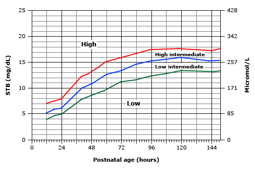

ICTERICIA NEONATAL POR BILIRRUBINA INDIRETA
Conceito:
Constitui-se em um dos problemas mais frequentes no período neonatal e corresponde à expressão clínica da hiperbilirrubinemia.
Hiperbilirrubinemia é definida como a concentração sérica de bilirrubina indireta (BI) maior que 1,5mg/dL ou de bilirrubina direta (BD) maior que 1,5mg/dL, desde que esta represente mais que 10% do valor de bilirrubina total (BT).
Classificação da hiperbilirrubinemia:
Significante: BT sérica >15–17mg/dL (1 a 8% dos nascidos vivos);
Grave: BT >25mg/dL (1 caso em 500 a 5.000 nascidos vivos).
Severa-Extrema: BT >30mg/dL (1 caso em 15.000 nascidos vivos).
A hiperbilirrubinemia significante, presente na primeira semana de vida, é um problema comum em RN a termo e pré-termo tardio.
A Presença de icterícia PRECOCE-antes de 24 horas de vida e valores de BT >12mg/dL, independentemente da idade pós-natal, alerta para a investigação da causa.
A investigação da etiologia:
Independentemente das idades gestacional e pós-natal, inclui análise do quadro clínico e dos exames laboratoriais.
É UMA DAS CAUSAS MAIS FREQUENTES DE INTERNAÇÃO APÓS A ALTA.

Valores de BT= 20 mg//dL já estão associados a acometimento de sistema nervoso central e devem ser investigados e tratados.
Hiperbilirrubinemia neonatal severa é definida como BT > 30 mg/dL . É associada com um risco aumentado de encefalopatia bilirrubínica e disfunção neurológica induzida por bilirrubina (BIND), a qual ocorre quando a bilirrubina atravessa a barreira hemato-encefálica, acumula-se no tecido cerebral e provoca neurotoxicidade.
O termo Kernicterus é usado para descrever a sequela crônica e permanente de BIND, e pode ocorrer em qualquer idade.
Fatores De Risco Para Hiperbilirrubinemia Neonatal:
Os principais fatores de risco para Hiperbilirrubinemia neonatal severa são:
Icterícia nas primeiras 24 horas de vida;
Incompatibilidade de grupo sanguíneo com teste de antiglobulina direta positivo;
Outras doenças hemolíticas (por exemplo, deficiência de G6PD);
Idade gestacional de 35 a 36 semanas;
Irmão que necessitou fototerapia;
Cefalohematoma ou contusão significativa;
Aleitamento materno exclusivo, principalmente se houver dificuldades na amamentação e houver perda de peso excessiva;
Descendência asiática;
BT de alta em faixa intermediária, percentil entre 75 e 95 para idade;
Icterícia observada antes da alta;
Bebê macrossômico, filho de mãe diabética;
Policitemia;
Sexo masculino;
Idade materna superior a 25 anos.
- Incompatibilidade ABO ou Rh;
- Defeitos hereditários da membrana de glóbulos vermelhos (por exemplo, esferocitose hereditária e eliptocitose);
- Defeitos enzimáticos do eritrócito (por exemplo, deficiência de glicose-6-fosfato desidrogenase [G6PD], deficiência de piruvato quinase e porfiria eritropoiética congênita).
- Sepse;
- Macrossomia;
- Cefalohematoma;
- Policitemia
Hipóxia ou acidose;
Hipoglicemia;
Drogas;
Hipotiroidismo;
SÍNDROME DE CRIGLER-NAJJAR — EXISTEM DUAS VARIANTES:
Tipo I é a forma mais grave de desordens hereditárias UGT1A1. A atividade da UGT é praticamente ausente e a hiperbilirrubinemia severa se desenvolve nos primeiros dois a três dias após o nascimento. Fototerapia ao longo da vida é necessária para evitar a BIND, a menos que o transplante de fígado seja realizado. O modo de herança é autossômica recessiva.
Tipo II – é menos grave , mantém certa função da UGT. Embora algumas crianças afetadas desenvolvam icterícia grave, a hiperbilirrubinemia frequentemente responde ao tratamento com fenobarbital. Geralmente é herdada de maneira autossômica recessiva, embora a transmissão autossômica dominante ocorre em alguns casos.
SÍNDROME DE GILBERT: é o distúrbio hereditário mais comum de glicuronidação da bilirrubina. Resulta de uma mutação na região promotora do gene UGT1A1. A mutação provoca uma diminuição da produção da UGT, levando a aumento de BI. Icterícia do leite materno durante a segunda semana após o nascimento pode ser devido a manifestação neonatal simultânea da síndrome de Gilbert.
- Deficiência na motilidade intestinal causada por uma obstrução anatômica ou funcional ( p.ex.: estenose hipertrófica de piloro);
- Icterícia do leite materno: definida como a persistência de “icterícia fisiológica” além da primeira semana de idade. Apresenta-se normalmente após os primeiros 3 a 5 dias de vida, um pico dentro de 2 semanas e progressivamente volta a níveis normais durante 3 a 12 semanas. Icterícia do leite materno deve ser distinguida da falha na amamentação com icterícia que ocorre dentro da 1ª semana de vida, resultando em perda excessiva de peso e/ou desidratação;
- Alteração da microbiota por antibióticos.
Quando investigar a icterícia?
- Aumento precoce e/ou muito rápido de BT ( >0,2 mg/dL/hora) devem ser internados para fototerapia e investigação;
- Manutenção de icterícia após 2 semanas de vida;
- BT maior ou igual ao percentil 95;
- Suspeita de doença hemolítica
Sugere-se como investigação inicial:
- Bilirrubina total e frações (BTF): é de fundamental importância diferenciar se a hiperbilirrubinemia se dá às custas de direta/conjugada (BD) ou indireta/não-conjugada (BI);
- Tipagem sanguínea e teste de Coombs direto para avaliar doença hemolítica;
- Hemograma e esfregaço – hemoglobina baixa pode ser indicativa de hemólise, que pode ser confirmado pela presença de células fragmentadas no esfregaço de sangue;
- Reticulócitos – um aumento de reticulócitos durante as primeiras 72 horas de vida é consistente com a destruição de células vermelhas do sangue (por exemplo, hemólise);
- Dosagem de glicose-6-fosfato desidrogenase (G6PD);
- Se não realizado na triagem neonatal: TSH e T4L.
Para casos não graves, a fototerapia é o tratamento de escolha, sendo segura e eficaz. Para lactentes que foram readmitidos, pode-se suspender a fototerapia quando a BT atingiu 12 a 14 mg/dL. Deve ser coletado controle em 24-48 horas devido à possibilidade de efeito rebote, podendo ser realizado em seguimento ambulatorial.
SE Grave: BT >25mg/dL ou Severa: BT >30mg/Dl;
AVALIAR Exsanguíneotransfusão (160ml/Kg - sangue total) de acordo com os níveis de Bilirrubina total e organograma de risco *Nos casos hemolíticos;
Iniciar fototerapia intensiva imediatamente e considerar o uso de Imunoglobumina (Gamaglobulina imune);
Encaminhar para acompanhamento e reavaliação ambulatorial os pacientes com hiperbilirrubinemia indireta sem nível para fototerapia, sem elevação de bilirrubina direta, bom estado geral e boa evolução ponderal, em 48h.
Lembrar de repetir o teste da orelinha (BERA) após a alta hospitalar.
Colestase Neonatal (Hiperbilirrubinemia Direta):
Definida como BD> 1mg/dL se BT < 5mg/dl e/ou BD > 20% da BT se BT>5 mg/dL. Clinicamente, a suspeita deve ser feita quando houver colúria e/ou acolia/hipocolia fecal (sempre deve ser avaliada pelo médico, que deve partir as fezes para observar seu interior).
A avaliação de um bebê com hiperbilirrubinemia conjugada é complexa, porque muitos distúrbios podem apresentar colestase neonatal e a distinção entre eles é difícil, devido à falta de testes diagnósticos específicos. No entanto, relativamente poucos diagnósticos representam a maioria dos casos.
Causas mais comuns de colestase |
Porcentagem dos diagnósticos |
| Atresia de vias biliares (AVB) | 25% |
| Hepatite neonatal idiopática | 25% |
| Hepatite infecciosa | 11% |
| Associada a nutrição parenteral | 6% |
| Doenças metabólicas | 4% |
| Deficiencia de alfa 1 -antitripsina | 4% |
| Sd. de Alagille | 1% |
| Colestase progressiva familiar intrahepática (PIFC) | 1% |
- Atresia de vias biliares (AVB);
- Hipoplasia de vias biliares;
- Cisto de colédoco;
- Estenose ductal;
- Doença de Caroli;
- Colangite esclerosante;
- Colelitíase;
- Infecciosas (TORCHS, hepatites virais e outros vírus , tuberculose, infecções bacterianas);
- Doenças metabólicas hereditárias/Erros inatos do metabolismo (Gaucher, Niemann-pick, hemocromatose, Colestase familiar intra hepática, hipotiroidismo, deficiência de alfa1-antitripsina, Wilson, fibrose cística, glicogenose tipo IV, galactosemia, tirosinemia, Sd. de Alagille, entre outras).
- Tóxicas ( Nutrição parenteral, drogas, sepse).
- Outras (Insuficiência cardíaca congestiva, lúpus neonatal, histiocitose X, tumores)
Portanto, as causas são inúmeras e o diagnóstico é, muitas vezes, desafiador. A investigação deve ser realizada no menor tempo possível, pois a idade de intervenção muda drasticamente o prognóstico em grande parte das etiologias. É importante nunca deixar bebês colestáticos sem um seguimento próximo, e se possível tratá-los em centros de referência.
Como investigação inicial, deve-se afastar causas infecciosas, avaliar função hepática e caracterizar a colestase:
- Hemograma, hemocultura (se for o caso), VHS/PCR;
- Aminotransferases (AST/ALT/FA/GGT);
- Bilirrubinas total e frações;
- Tempo de protrombina e tempo de tromboplastina parcial;
- Eletroforese de proteínas;
- Colesterol total e frações e triglicerídeos;
- Urina 1 e urocultura;
- Sorologias ZTORCHS mãe e bebê se possível;
- Avaliar teste do pezinho;
Numa segunda avaliação:
- Alfa 1-antitripsina sérica;
- Ferro e ferritina;
- Testes de função metabólica: glicemia de jejum, gasometria venosa, eletrólitos, lactato, piruvato e amônia séricos;
- Triagem urinária para erros inatos do metabolismo;
- Dosagens enzimáticas específicas.
Os erros inatos do metabolismo apresentam em geral acidose metabólica, alcalose respiratória, hiperamoniemia, hipoglicemia, cetose, aumento de lactato e piruvato.
- Vértebra em asa de borboleta: Sd. de Alagille;
- Dextrocardia e situs inversus : AVB;
- Calcificações cranianas : Toxo e CMV.
TRATAMENTO:
INTERNAR PARA INVESTIGACAO, ACOMPANHAMENTO E TRATAMENTO.
Devido à complexidade do assunto, sempre que possível a colestase neonatal deve ser acompanhada por um hepatologista pediátrico.
HIPERBILIRRUBINEMIA NEONATAL NO PS:
ÀS CUSTAS DE:
Bb Indireta: (Aleitamento, leite materno, policitemia, sangue extra-vascular, incompatibilidade, deficiência de G6PD)
Bb Direta (BD > 2 se BTF até 5 ou BD > 20% do total se BTF > 5)
SOLICITAR:
- Hemograma, reticulócitos, teste de Coombs, bilirrubina total e frações, transaminases, fosfatase alcalina, Gama GT, albumina.
- Checar Grupo Sanguíneo e fator RH da mãe e do RN.
- Checar sorologias para ZTORCH’s do pré-natal,
- USG de abdome
Importante avaliar na história clínica: idade do RN em horas e dias, tempo de aparecimento da icterícia, tipo de alimentação, déficit ponderal e hidratação, diurese e dejeções (colúria, acolia)
Investigar os casos onde há elevação da bilirrubina direta
Investigar os casos onde há elevação da bilirrubina direta. Atenção especial para a Atresia de Vias Biliares, Infecções Congênitas ,Erros Inatos do Metabolismo (Galactosemia), Deficiência de alfa-1 antitripsina e Cisto de Colédoco.
Consulta com Gastropediatra - *Avaliar necessidade
Tratamento:
INICIAR:
Fototerapia única ou dupla
SE Significante: BT sérica >15–17mg/dL
SE Grave: BT >25mg/dL ou Severa: BT >30mg/dL
AVALIAR:
- Exsanguíneotransfusão (160ml/Kg - sangue total) de acordo com os níveis de Bilirrubina total e organograma de risco *Nos casos hemolíticos
- iniciar fototerapia intensiva imediatamente e considerar o uso de Imunoglobumina (Gamaglobulina imune )
Encaminhar para acompanhamento e reavaliação ambulatorial os pacientes com hiperbilirrubinemia indireta sem nível para fototerapia, sem elevação de bilirrubina direta, bom estado geral e boa evolução ponderal, em 48h.
Referências Bibliograficas:
DE TOMMASO, A.M.A; PORTA, G; Manual de hepatologia pediátrica.1a ed, São Paulo, Atheneu 2009.
Downloads/guia-atencao-ao-recem-nascido-vol-2-[444-090312-SES-MT]%20(1).pdf:
“Atenção à saúde do recém-nascido: guia para os profissionais de saúde: intervenções comuns, icterícias e infecções. Brasília, DF: Ministério da Saúde, 2011. v. 2. (Série A. Normas e Manuais Técnicos).”
Leandro Buck ,Icterícia neonatal – Abordagem no seguimento ambulatorial de bebês ictéricos,Revisão com causas, fatores de risco, tipos e tratamentos para a icterícia neonatal:
http://www.portalped.com.br/blog/author/leandrobuck/
Responsável pela rotina: Dra. Maria Aparecida Moreira Machado